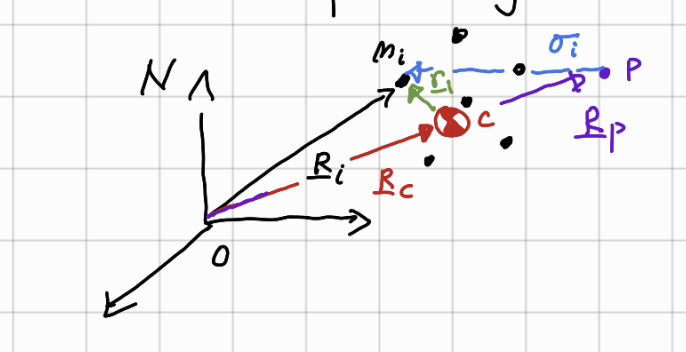

3 Euler’s Laws - Rigid Body Motion
3.1 Dynamics and Newton’s Laws
Motivation: study the motion of a rigid body in 3D space. Utilize Euler’s Laws to find governing equations of motion
In the fascinating realm of dynamics, we explore the fundamental principles that govern the motion of objects and systems. At its core lies the concept of forces, which are the agents responsible for initiating and modifying motion. According to Newton’s second law, the acceleration of an object is directly proportional to the net force acting upon it and inversely proportional to its mass. This simple yet powerful relationship has provided a cornerstone for understanding motion in classical mechanics. However, as we delve deeper into the study of rigid bodies, a more comprehensive framework is required. This is where Euler’s laws enter the stage, offering a generalized description of motion for rigid bodies. Euler’s laws extend the principles of forces and acceleration to encompass rotational motion, providing a holistic perspective that accounts for both translational and rotational dynamics. With Euler’s laws, we can unlock the secrets of how rigid bodies move and gain a deeper appreciation for the intricate interplay between forces and motion in the dynamic world around us.
What do you think Euler’s Laws can do that Newton’s 2nd Law by itself can’t do? Hint: Think about the difference between a point-mass and a rigid-body!
3.2 Euler’s Laws
To understand Euler’s Laws, one must have a firm grasp of other relevant concepts such as linear momentum, angular momentum, and center of mass.
3.2.1 Linear momentum, Angular momentum, and Center of Mass (COM)
Linear momentum \(\vec{p}\) of a single point mass is defined as \[ \vec{p}=m\dot{\vec{r}} \] where \(\underline{r}\) is the inertial position vector of the point mass. Assuming mass to be invariant (sorry physicists!), Newton’s 2nd Law can also be written as \[ \frac{d}{dt}\vec{p} = \vec{F} \] where \(\vec{F}\) is the sum of all external forces that are being applied to the point mass. This is also known as Euler’s 1st Law.
Unlike linear momentum, angular momentum \(\vec{H}\) requires a reference point. As shown in the figure, \(\vec{r}_p\) represents the inertial position vector of the reference point. Suppose \(\vec{\sigma} = \vec{r} - \vec{r_p}\). Then, by definition, \[ \vec{H} = \vec{\sigma} \times m \dot{\vec{\sigma}} \] Taking a time derivative of the above expression,
\[\begin{align} \dot{\vec{H}} &= \dot{\vec{\sigma}} \times m\dot{\vec{\sigma}} + \vec{\sigma} \times m\ddot{\vec{\sigma}} \\ &= \vec{\sigma} \times m(\ddot{\vec{r}}-\ddot{r}_p) \\ &= \vec{\sigma} \times \vec{F} - \vec{\sigma} \times m\ddot{\vec{r}}_p \end{align}\]
Now, in cases where \(\ddot{r}_p=0\), the above expression reduces to \[ \dot{\vec{H}} = \vec{\sigma} \times \vec{F} \] which is known as Euler’s 2nd Law.

Now, suppose you have a multi particle system. By definition, center of mass is defined as a point where sum of net moment is zero; i.e. \[ \Sigma_{i=1}^N m_i r_i = 0 \]
Then, \[ \Sigma_{i=1}^N m_i \vec{R}_i = \Sigma_{i=1}^N m_i \vec{R}_c = M\vec{R}_c \rightarrow \vec{R}_c = \frac{\Sigma_{i=1}^N m_i \vec{R}_i}{M} \]